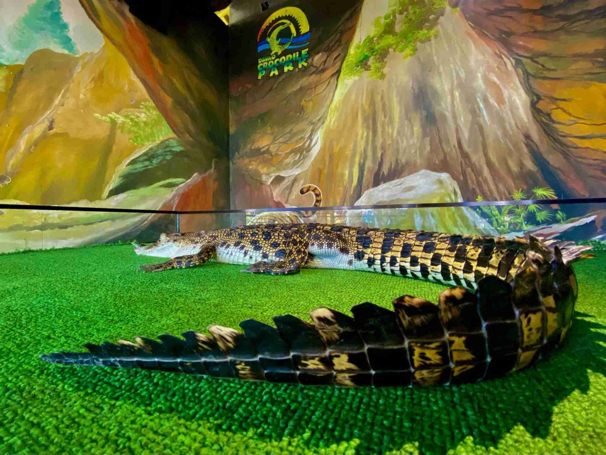
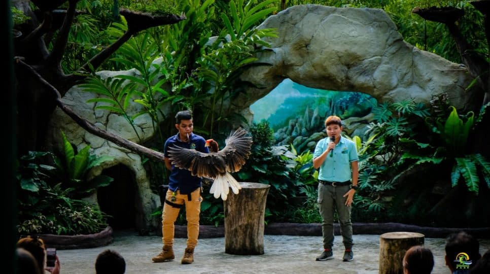
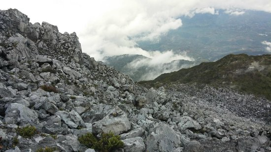
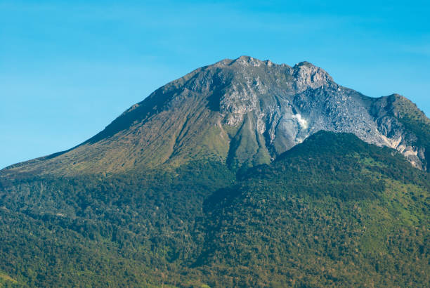
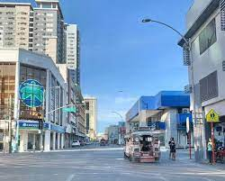
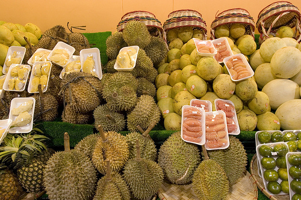
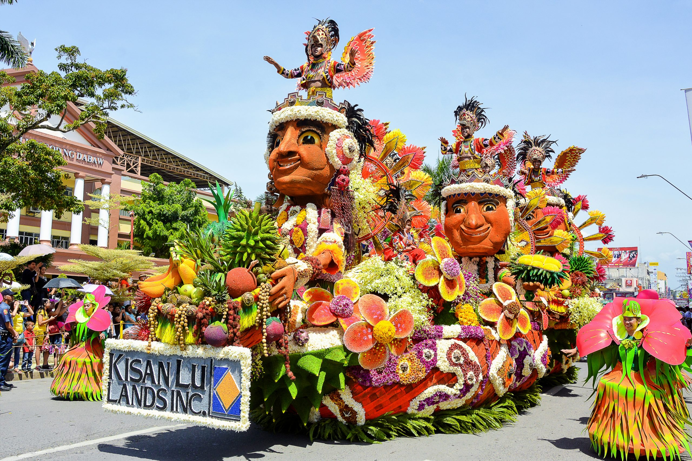

• DAVAO CITY CROCODILE PARK


If you are a wild animal enthusiast, this is the right place for you to set foot and experience the adventure with the crocodiles, snakes, our National bird – eagle and other animal species. Bring your family and friends as they will definitely enjoy the ambiance of the place, have an adventure while learning plus you get a chance to taste their exotic “saltwater crocodile lechon”. Found at Riverfont Corporate City, Diversion road, Maa, Davao City, about 8.7km from Francisco Bangoy(Davao) International Airport, the place is open from 8:30am-4:30pm and with only minimal entrance fee.
• MOUNT APO


Standing tall at 2,942m above sea level, Mount Apo as the country’s highest peak will give you a mesmerizing wonder of nature and a playground for mountain enthusiast and hikers. Climbing the peak is but a rewarding experience as you are going to have an encounter with different tribes and witness the diverse culture of different indigenous peoples residing at the foot of the mighty mountain. Also, the trail towards the summit offers you a flora and fauna that can only be seen in the place. Experience the “Lord of the Rings” feel as you pass through the boulders – a place along the trail, near the summit where volcanic debris, ashes, big stones and sulfuric vents are found. It has two trails, the Kidapawan City (North Cotabato) and the Kapatagan(Davao del Sur) trail. Try it now!
• DAVAO CITY DOWNTOWN



Davao City as a rich and buzzling city, those who are fond of strolling with tall buildings around and a beautiful landscape in the background, will surely enjoy this place. One of the cleanest city in the Philippines, this city will offer a nice surrounding view as you cannot see a single trash and food wrappers in its busy thoroughfares. C.M. Recto and San Pedro Street let you experience a place without the irritating and eye sore spaghetti lines as these streets were the initial phases where the Davao City’s underground cabling was implemented. You may visit the city in August of every year and experience the colorful and enjoyable Kadayawan Festival. Fruits like pomelo, rambutan, Lansones, Marang, Mangosteen and the King of Fruit Durian were abundant in the city.